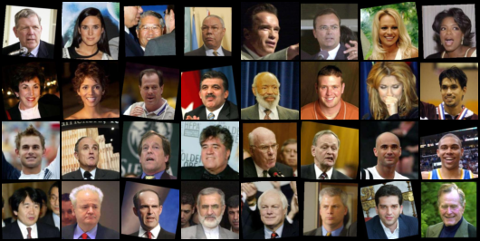

Convolutional Variational AutoEncoder - cVAE
Tramite un modello di AutoEncoder(Encoder - Decoder) usando la
CNN(Convolutional
Neural Network) si possono creare delle immagini nuove che non esistono nella realtà come con il modello GAN.
Nel dettaglio vedremo la creazione di 2 modelli un Encoder che riduce le dimensioni dei dati inseriti ed un Decoder che
ricrea l'immagine inserita. Tra i 2 modelli si inserisce dei layer full connected che prende il latent space
z che deriva dall'encoder che poi sarà l'input del decoder che non cercherà di ricreare fedelmente l'immagine inserita in input ma ne creerà
una differente che prima non esisteva.
L'input di questo modello sono delle immagini di celebrità che dopo essere state scaricate vengono
trasformate nel formato 64x64 e con il dataloader inserite in dataset iterabili in base al batch size definito.
Sotto il codice relativo all'import dei moduli necessari e la creazione del dataset sopra indicato.
import os
import tarfile
-
!pip install mxnet
from mxnet.gluon import utils
import torch
import torchvision
import torch.nn as nn
import torch.nn.functional as F
import torchvision.datasets as dset
from torchvision import transforms
from torchvision.datasets import ImageFolder
from torchvision.utils import save_image
from torchvision.utils import make_grid
from torch.autograd import Variable
from torch.utils.data import DataLoader, Dataset
import matplotlib.pyplot as plt
import numpy as np
import torchvision.utils as vutils
import joblib
from PIL import Image
import shutil
#from ray import tune
#from ray.tune import CLIReporter
#from ray.tune.schedulers import ASHAScheduler
from torch.utils.tensorboard import SummaryWriter
writer = SummaryWriter('TensorBoard/dcGan')
%matplotlib inline
Definizione hyperparameter
kernel_size = 3
stride = 2
padding = 2
channels = 64 # initial number of filters
color = 3 # 3 color 1 b/n
latent_dim = 100
torch.manual_seed(125)
batch_size = 128
lr = 0.002
# select device CPU o GPU
device = torch.device('cuda' if torch.cuda.is_available() else 'cpu')
Download, estrazione e creazione dataloader delle immagini
lfw_url = 'http://vis-www.cs.umass.edu/lfw/lfw-deepfunneled.tgz'
root = 'lfw_dataset'
if not os.path.exists(root):
os.makedirs(root)
data_file = utils.download(lfw_url)
with tarfile.open(data_file) as tar:
tar.extractall(path=root)
dest = 'lfw'
if not os.path.exists(dest):
os.makedirs(dest)
for path, _, files in os.walk(root):
for file in files:
if file :
shutil.copy(path + '/'+ file, '/content/lfw')
root = '/content/'
my_dataset = dset.ImageFolder(root= root,
transform=transforms.Compose([
transforms.Resize(64),
transforms.CenterCrop(64),
transforms.ToTensor(),
transforms.Normalize((0.5, 0.5, 0.5), (0.5, 0.5, 0.5)),
]))
# Create the dataloader
train_data = DataLoader(my_dataset, batch_size=batch_size,
shuffle=True, num_workers=4, drop_last= True)
Vediamo alcuni esempi delle imagini di celebrità che vengono usate per creare il modello.

Definizione oggetto che contiene i 2 modelli, l'Encoder ed il Decoder
# define class for Convolutional VAE
class myConVAE(nn.Module):
def __init__(self):
# encoder
self.encoder1 = nn.Conv2d(
in_channels=color, out_channels=channels, kernel_size=kernel_size, stride=stride, padding=padding )
self.bn1 = nn.BatchNorm2d(channels)
self.encoder2 = nn.Conv2d(
in_channels=channels, out_channels=channels*2, kernel_size=kernel_size, stride=stride, padding=padding )
self.bn2 = nn.BatchNorm2d(channels*2)
self.encoder3 = nn.Conv2d(
in_channels=channels*2, out_channels=channels*4, kernel_size=kernel_size, stride=stride, padding=padding )
self.bn3 = nn.BatchNorm2d(channels*4)
self.encoder4 = nn.Conv2d(
in_channels=channels*4, out_channels=channels*8, kernel_size=kernel_size, stride=stride, padding=padding )
self.bn4 = nn.BatchNorm2d(channels*8)
self.encoder5 = nn.Conv2d(
in_channels=channels*8, out_channels=channels*16, kernel_size=kernel_size, stride=stride, padding=padding )
self.bn5 = nn.BatchNorm2d(channels*16)
# full connect layer
self.fc1 = nn.Linear(1024, 2048) # 1024 = channels * 16
self.fcMean = nn.Linear(2048, latent_dim)
self.fcLog_var = nn.Linear(2048, latent_dim)
self.fc2 = nn.Linear(latent_dim, 1024)
# decoder
self.decoder1 = nn.ConvTranspose2d(
in_channels=channels*16, out_channels=channels*8, kernel_size=kernel_size, stride=stride )
self.bn6 = nn.BatchNorm2d(channels*8)
self.decoder2 = nn.ConvTranspose2d(
in_channels=channels*8, out_channels=channels*4, kernel_size=kernel_size, stride=stride )
self.bn7 = nn.BatchNorm2d(channels*4)
self.decoder3 = nn.ConvTranspose2d(
in_channels=channels*4, out_channels=channels*2, kernel_size=kernel_size, stride=stride )
self.bn8 = nn.BatchNorm2d(channels*2)
self.decoder4 = nn.ConvTranspose2d(
in_channels=channels*2, out_channels=channels, kernel_size=kernel_size, stride=stride )
self.bn9 = nn.BatchNorm2d(channels)
self.decoder5 = nn.ConvTranspose2d(
in_channels=channels, out_channels=color, kernel_size=4, stride=stride )
def encoder(self, x):
# encoder
x = F.relu(self.bn1(self.encoder1(x)))
x = F.relu(self.bn2(self.encoder2(x)))
x = F.relu(self.bn3(self.encoder3(x)))
x = F.relu(self.bn4(self.encoder4(x)))
x = F.relu(self.bn5(self.encoder5(x)))
x = F.adaptive_max_pool2d(x, 1) # adaptive maxpooling
x = x.reshape(batch_size,-1) # reshape for input into full connected layer
return x
def decoder(self, x):
# decoder
x = F.relu(self.bn6(self.decoder1(x)))
x = F.relu(self.bn7(self.decoder2(x)))
x = F.relu(self.bn8(self.decoder3(x)))
x = F.relu(self.bn9(self.decoder4(x)))
x = torch.sigmoid(self.decoder5(x))
return x
def crea(self, x):
# input encoder
x = self.decoder(x)
return x
def forward(self, x):
enc = self.encoder(x)
hidden_layer = self.fc1(enc)
mean_lv = self.fcMean(hidden_layer)
log_var = self.fcLog_var(hidden_layer)
# mean_lv -- log_variance -- for get latent Z
std_dev = torch.exp(0.5*log_var) # standard deviation
random_space = torch.randn_like(std_dev) # get random tensor with same size std_dev
# latent space vector
latent_space_z = mean_lv + (random_space * std_dev)
latent_space_z = self.fc2(latent_space_z)
latent_space_z = latent_space_z.view(enc.shape[0],enc.shape[1], 1, 1)
out = self.decoder(latent_space_z)
return out , mean_lv, log_var
Istanza dell'oggetto ed assegnazione optimizer e loss function
history_loss = []
convae = myConVAE().to(device)
optimizer = torch.optim.Adam(convae.parameters(), lr=lr)
lossF = nn.BCELoss(reduction='sum')
Esecuzione della fase train per creare modello
convae.train()
num_epochs = 100
for epoch in range(num_epochs):
for n_train, data in enumerate(train_data, 0):
x_train = data[0].to(device)
optimizer.zero_grad()
recreated_image, mean_lv, log_variance_lv = convae(x_train)
bceLoss = lossF(recreated_image.to(device), x_train) # calculate loss from real image and recreated image
# KLD is KL-Divergence = "0.5 * sum(1 + log(sigma^2) - mean_lv^2 - sigma^2)"
KLD = -0.5 * torch.sum(1 + log_variance_lv - mean_lv.pow(2) - log_variance_lv.exp())
lossKD = bceLoss + KLD # complesse loss (loss BCE + KLD)
lossKD.backward()
history_loss.append(lossKD.item())
optimizer.step()
if n_train + 1 == len(train_data) :
#salvaCheckpoint()
print(f"Epoch: {epoch} bce Loss : {bceLoss: 3f}", f"KLD loss : {KLD: 3f}")
Display del Modello
myConVAE(
(encoder1): Conv2d(3, 64, kernel_size=(3, 3), stride=(2, 2), padding=(2, 2))
(bn1): BatchNorm2d(64, eps=1e-05, momentum=0.1, affine=True, track_running_stats=True)
(encoder2): Conv2d(64, 128, kernel_size=(3, 3), stride=(2, 2), padding=(2, 2))
(bn2): BatchNorm2d(128, eps=1e-05, momentum=0.1, affine=True, track_running_stats=True)
(encoder3): Conv2d(128, 256, kernel_size=(3, 3), stride=(2, 2), padding=(2, 2))
(bn3): BatchNorm2d(256, eps=1e-05, momentum=0.1, affine=True, track_running_stats=True)
(encoder4): Conv2d(256, 512, kernel_size=(3, 3), stride=(2, 2), padding=(2, 2))
(bn4): BatchNorm2d(512, eps=1e-05, momentum=0.1, affine=True, track_running_stats=True)
(encoder5): Conv2d(512, 1024, kernel_size=(3, 3), stride=(2, 2), padding=(2, 2))
(bn5): BatchNorm2d(1024, eps=1e-05, momentum=0.1, affine=True, track_running_stats=True)
(fc1): Linear(in_features=1024, out_features=2048, bias=True)
(fcMean): Linear(in_features=2048, out_features=100, bias=True)
(fcLog_var): Linear(in_features=2048, out_features=100, bias=True)
(fc2): Linear(in_features=100, out_features=1024, bias=True)
(decoder1): ConvTranspose2d(1024, 512, kernel_size=(3, 3), stride=(2, 2))
(bn6): BatchNorm2d(512, eps=1e-05, momentum=0.1, affine=True, track_running_stats=True)
(decoder2): ConvTranspose2d(512, 256, kernel_size=(3, 3), stride=(2, 2))
(bn7): BatchNorm2d(256, eps=1e-05, momentum=0.1, affine=True, track_running_stats=True)
(decoder3): ConvTranspose2d(256, 128, kernel_size=(3, 3), stride=(2, 2))
(bn8): BatchNorm2d(128, eps=1e-05, momentum=0.1, affine=True, track_running_stats=True)
(decoder4): ConvTranspose2d(128, 64, kernel_size=(3, 3), stride=(2, 2))
(bn9): BatchNorm2d(64, eps=1e-05, momentum=0.1, affine=True, track_running_stats=True)
(decoder5): ConvTranspose2d(64, 3, kernel_size=(4, 4), stride=(2, 2))
)
Display dell'andamento loss function
plt.figure(figsize=(12,7))
plt.title("Loss Training")
plt.plot(history_loss,label="Total Loss")
plt.xlabel("iterations")
plt.ylabel("Loss")
plt.legend()
plt.show()
Valutazione del modello creato
# set model for evalutation
convae.eval()
with torch.no_grad():
randomz = torch.randn(batch_size,3,64,64).to(device)
nuova_immagine = convae(randomz)[0]
plt.subplot(1,2,1)
plt.axis("off")
plt.title("nuova_immagine")
plt.imshow(np.transpose(vutils.make_grid(nuova_immagine.to(device)[:1], padding=2, normalize=True).cpu(),(1,2,0)))
plt.show()
cvarRis.png